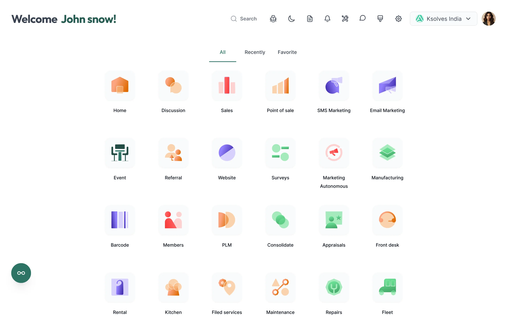
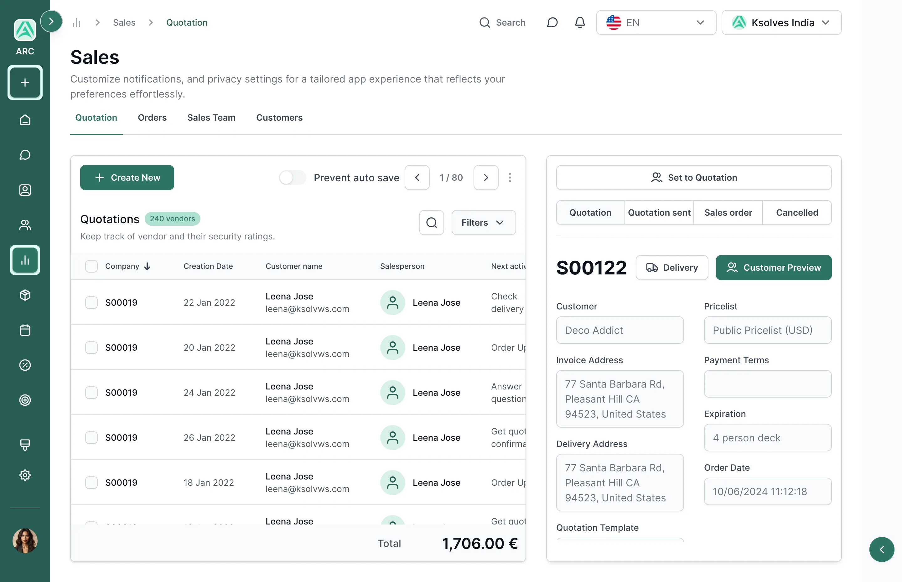
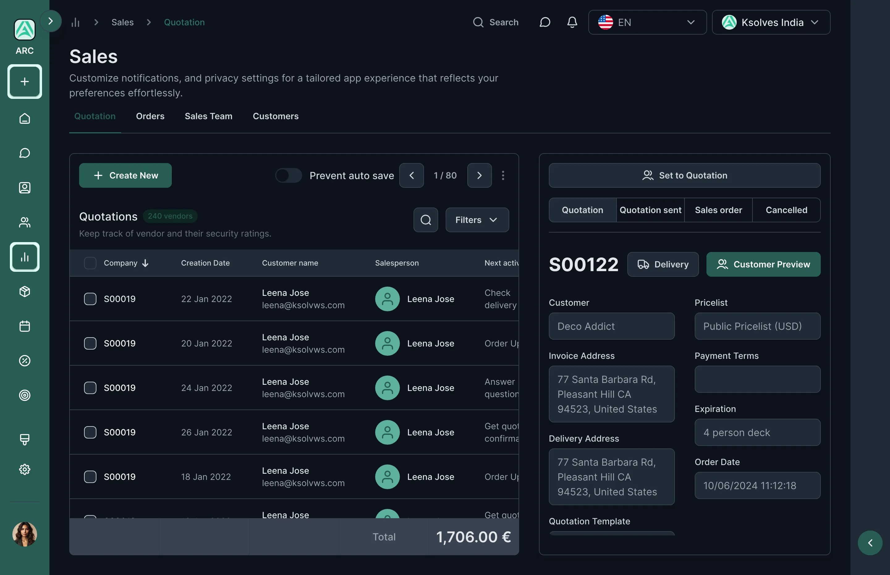

Everyone got the same screens, and no say in them
A long grid of apps to scan every morning, lists and records on separate screens, a single bright look, and any change to colours or layout meant a developer.
ARC Backend Theme
Every Odoo company got the same backend: a long grid of apps, one bright look, and no say in any of it without a developer. I redesigned the home, menus, views and settings so each person, company and admin can shape them to how they work.

One click recolours the whole backend — sidebar, buttons, highlights — without touching code.
Every preference can be set for a single user, a whole company, or globally by the admin.
Glassmorphism, solid and gradient icons, each available in light and dark mode.
Odoo's default backend works, but it's the same for everyone: the same look, the same menus, the same layout. Changing any of it means paying a developer. People spend their whole working day in these screens, yet have no say in how they work.
ARC gives Odoo a modern backend people can shape: a phone-style app drawer, 13 colour themes, three icon styles, movable menus, side-by-side lists and records, and dark mode. Every option can be set for one person, one company or everyone, and it all sits on one design system.
This is the story of how the Odoo screens people stare at from nine to six went from one fixed look for everyone to something each person, and each company, can make their own.
A long grid of apps to scan every morning, lists and records on separate screens, a single bright look, and any change to colours or layout meant a developer.
Nobody wanted a prettier Odoo for its own sake. They wanted fewer steps to their daily work, and the right person in control of each choice.
An app-drawer home, side-by-side lists and records, 13 colour themes and dark mode, with every setting owned by a user, a company, or the whole system.
Odoo runs sales, accounting, stock, HR and dozens of other apps from one set of behind-the-scenes screens. The apps keep growing, but the screens around them (home, menus, views and settings) stay the same for every company and every person.
The default backend is like an office where everyone gets the same desk, chair and lighting, whatever their job. ARC lets each person adjust their own desk, lets the company paint the walls in its colours, and keeps the house rules with whoever runs the building.
The home screen is one flat grid. The more apps a company adds, the longer people scan for the two or three they actually use.
Branding stops at the logo. Matching the company's colours means a developer writing and maintaining custom code.
Working through quotations or contacts means opening one, going back to the list, and opening the next, losing your place every time.
Many teams spend eight hours or more in Odoo. Without a proper dark mode, long or late sessions are hard on the eyes.
Kavya is a sales coordinator at an 80-person distribution company. She's in Odoo from nine to six, handling dozens of records a day. None of her problems were big; they just added up. Here's a typical day.
She uses three or four apps, but has to look past all of them.
Open one, back to the list, find her place, open the next. Forty times.
Now she has to find it and undo it.
IT says that needs a developer and custom code.
Her eyes are tired, and tomorrow will be the same.
An illustrative day, pieced together from what daily users and administrators described in research.
Three roles shaped ARC: the daily user who works in the backend all day, the administrator who keeps it consistent, and the business owner who wants it to feel like their company.
Sales Coordinator
Distribution company · 80 employees
I'm in Odoo from nine to six. I just want it to get out of my way.
Odoo Administrator
Same company · IT team
Let people tweak their own screen — but some things have to look the same for everyone.
Business Owner
Same company · leadership
We invested in Odoo. It should look and feel like our company.
Kavya is the primary persona; Vikram and Anjali are secondary.
Kavya needed fewer steps and a calmer screen. Vikram needed control over who changes what. Anjali needed the brand. One way of handling settings had to serve all three.
Odoo's default backend treats every company and every person the same: the same home, the same menus, the same look. And there's no way to change that without code.
The people who use Odoo the most have the least say in how it looks and works.
How might we give every Odoo user a faster, more comfortable backend they can shape themselves, while letting companies keep a consistent, branded experience?
I wanted to find the friction a theme could genuinely remove, not just repaint, and to work out which choices belong to the user, the company and the administrator.
Small frustrations, repeated dozens of times a day. Paraphrased from the interviews:
“I use four apps, but I scroll past thirty to find them.”
“Every time I go back to the list, I lose my place.”
“Changing a colour means raising a ticket with a developer.”
Users and admins wanted different things, and both were right.
“Autosave saved my edit before I'd finished checking it.”
“On late shifts, I'd love a dark screen.”
Nobody wanted a prettier Odoo for its own sake. They wanted fewer steps to their daily work, and the right person in control of each choice.
I compared the ways companies change how their Odoo backend looks and works. Most changed the colours; few changed how people move through their day, and almost none let users and admins share control.
| Approach | Good at | What's missing | Verdict |
|---|---|---|---|
| Default Odoo backendBuilt-in | Clean and reliable. | Choice. One flat app grid, one look, and only basic personal preferences. | Generic |
| Colour-only themesApp store | A new colour scheme. | Anything beyond paint. Layout and menus stay the same, and it's the same for everyone. | Cosmetic |
| Custom codeDeveloper | Exactly the brand you want. | Staying power. It breaks with each Odoo upgrade and needs fixing again. | Fragile |
| Odoo StudioBuilt-in tool | Changing fields, forms and reports. | The overall look, the home screen and the menus. It does a different job. | Different job |
| ARC Backend ThemeThis project | App-drawer home, 13 colour themes, icon styles, menu layouts, split view and dark mode. | No code, and nothing all-or-nothing. Each setting belongs to a user, a company or everyone. | Opportunity |
The gap wasn't another colour scheme. It was a backend that rethinks how people get around every day, and puts each choice in the right person's hands, with no code.
Each decision came from a finding: fewer steps to daily work, a calmer screen, and the right person in control of every option. Here's what we noticed, what we could have done, and what we chose.
We noticed: users and admins wanted different things. So each preference (dark mode, list density, menu bar, favourites bar, comment panel position, company logo) can be set for one person, one company, or everyone. Admins set the defaults; users adjust within them.
We noticed: people used a handful of apps but scanned the whole grid to reach them. So the home screen became an app drawer, like a phone's, with All, Recent and Favourite tabs, putting daily apps one click away.
We noticed: going back and forth between a list and its records broke concentration every time. So a split view shows the list and the open record together, like an email inbox with its reading pane.
We noticed: theme names like “curved” or “glassmorphism” meant nothing to most people. So settings use colour swatches, icon previews and layout thumbnails, plus Apply, Cancel and Restore to default so nothing changes by accident.
We noticed: 13 colour themes, 3 icon styles, 2 modes and several layouts multiply into hundreds of combinations, far too many to design one by one. So every screen draws from shared colour scales, one type scale (Inter) and one set of components. Any combination stays consistent, and dark mode comes from the same building blocks rather than a separate design.
No single screen was hard. The hard part was deciding who controls each option, and keeping hundreds of possible combinations looking consistent.
ARC brings Odoo 17 a new home screen, flexible colours, settings with clear owners, and faster ways to work through records, all in light and dark mode.
Sales is one click away.
She works through all 40 without ever losing her place.
The discount isn't saved until she says so.
The admin picked them from a swatch and applied them company-wide. No code needed.
Her own setting, just for her.


A welcome header, search, and an app drawer with All, Recent and Favourite tabs. Icons come in three styles (frosted glass, solid and gradient), with an optional background image behind them.
Fixes“I use four apps, but I scroll past thirty to find them.”
Pick a boxed or curved style, one of 13 colours, an icon style, a background image and where the menu sits. You see each option before it's applied.
Fixes“Changing a colour means raising a ticket with a developer.”
Every setting, from automatic dark mode and list density to the menu bar and company logo, says who it applies to: you, your company, or everyone. Apply, Cancel and Restore to default keep changes safe.
FixesAll-or-nothing settings
A split view keeps the list and the open record side by side, a slim icon sidebar keeps every app in reach, and a “Prevent auto save” switch lets people decide when edits are saved.
Fixes“Every time I go back to the list, I lose my place.”
What shipped: a backend that companies can brand and people can tune, without a single line of custom code.
Plus boxed or curved styles and an optional background image. Branding without custom code.
Frosted-glass, solid and gradient app icons, and three places to put the main menu.
Every screen in light and dark, both made from the same colours, type and components.
Remember Kavya? “I'm in Odoo from nine to six. I just want it to get out of my way.” Now it does.
ARC turned Odoo's backend from one fixed interface into one people can shape: a faster home, calmer screens and working views built around how people move through their day, rather than a new coat of paint.
Options only help when it's clear who sets them. User, company and global turned a long list of settings into something people understood.
Swatches and thumbnails made choices obvious. Nobody needed to know what “curved” or “glassmorphism” meant before picking one.
With 13 colours, 3 icon styles and 2 modes, designing every combination was impossible. Shared building blocks kept them all consistent.